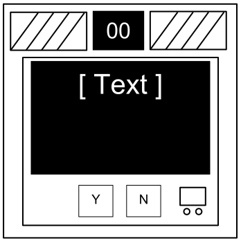
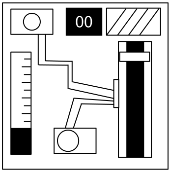

Sekcja 2: Moduły irytki
Moduły irytki nie mogą zostać unieszkodliwione i stanowią powracające zagrożenie.
Moduły irytki można rozpoznać po małym 2‑cyfrowym liczniku na środku górnej części modułu. Interakcja z bombą może spowodować ich aktywację. Po aktywowaniu wymagają regularnej uwagi, by zapobiec pomyłce, gdy ich licznik dobiegnie końca.
Pozostań czujny: moduły irytki mogą aktywować się ponownie w każdej chwili.

Odnośnie Wietrzenia gazu
Hakowanie to ciężka robota! Cóż, zazwyczaj tak jest. Do tego zadania wystarczy pijący ptak, wciskający na okrągło ten sam przycisk.
- Odpowiedz na zapytania komputera, naciskając „T” dla „Tak” lub „N” dla „Nie”.

Odnośnie Rozładowywania kondensatora
Obstawiam, że to ustrojstwo ma po prostu przyciągnąć twoją uwagę, bo w przeciwnym razie to straszna fuszerka.
- Rozładuj kondensator zanim zostanie przeciążony, przytrzymując jego dźwignię.